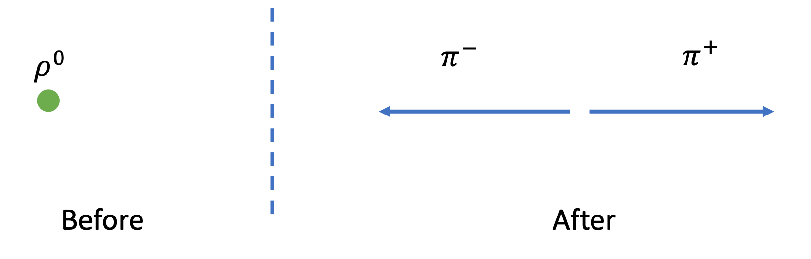
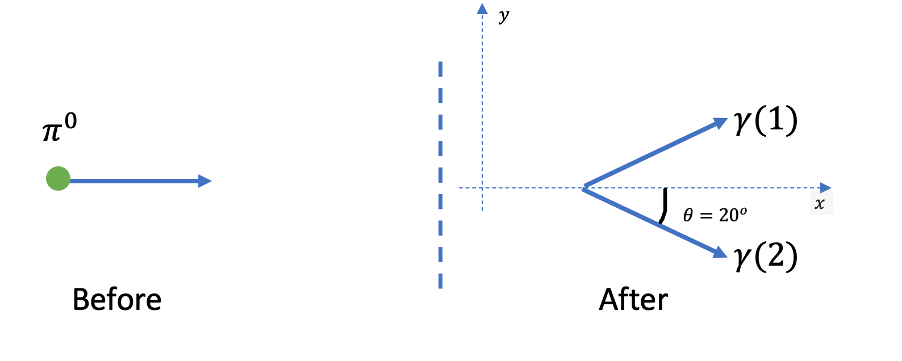

1. Units and Special Relativity#
Learning objectives: be able to calculate the kinematics of 2-body interactions and decays.
In this unit we introduce the elementary particles of the Standard Model, we introduce the units used to measure quantities in particle physics, and we recap the rules of relativistic kinematics.
1.1. Elementary particles#
From a historical point of view, particle physics begins in the 3rd century BC, with the Democritus particle theory. Democritus, a Greek philosopher, believed that the world was made of indivisible “atoms”. This was, in fact, correct as we now know that the basic components of matter are “elementary particles”. Such elementary particles do not have a known substructure and are considered to be point-like. In the past century, we saw great advancements in our understanding of the structure of matter. Broadly speaking, these advancements were achieved by bombarding matter with “probes”.
In the case of a microscope, such a probe is a photon, which will be able to study structures larger than the wavelength \(\lambda\) of the photons. If the probe is another type of particles, we should use the associated De Broglie wavelength \(\lambda=h / p\), where \(p\) is the particle momentum and \(h\) the Planck constant. As an example, if we use visible light as a probe, such as in an optical microscope, we can explore structure of the size of \(500 \mathrm{~nm}\), much larger than the size of an atom (compare with the Bohr radius of \(0.5 \mathrm{~nm}\) ), but sufficient to study most biological objects. Using X-rays, we can observe structures of the size of a few nm, which is why we use X-rays in applications such as crystallography. If we want to probe the subatomic structure of the atom, we will need shorter wavelengths and use probes of higher momentum. In the case of the Rutherford experiment, alpha-particles were used with a kinetic energy of \(5.30\ \mathrm{MeV}\), corresponding to a wavelength of about \(6.3\ \mathrm{fm}\), much smaller than the size of the atom, and sufficient to discover the presence of a hard nucleus inside an atom.
Alpha particles in the Rutherford experiment, however, did not have sufficient momentum to probe the nucleus structure. The story of particle physics and the quest for more energetic probes and “higher resolution” experiments began over a century ago and is still ongoing with the modern Large Hadron Collider.
1.2. Units of energy, momentum and mass#
As in atomic and solid state physics, a useful unit of energy in particle and nuclear physics is the electron volt (eV). This is the amount of kinetic energy gained by an electron when it is accelerated through a potential difference of one volt. Normally the energies involved in nuclear reactions are millions of electron volts \((\mathrm{MeV})\) and in high energy particle interactions they may be billions of electron volts or Giga electron volts \(\left(\mathrm{GeV}=10^{9}\ \mathrm{eV}\right)\).
A convenient unit for particle masses makes use of the Einstein mass-energy relationship \(E=m c^{2}\). This yields a unit for mass expressed as energy divided by the square of the velocity of light, \(\mathrm{MeV} / \mathrm{c}^{2}\) or \(\mathrm{GeV}/\mathrm{c}^{2}.\) For example
This system of units is extended to momentum through the relativistic relationship for the energy of a particle of rest mass \(m\) moving with momentum \(p\),
Therefore, we express momentum in the units of energy divided by the velocity of light (\(\mathrm{GeV} / \mathrm{c}\)), and we have a self-consistent system in which the velocity of light is implicitly used, but its value does not have to be explicitly put in to the calculations. In several textbooks, you will find the convention \(c=1\), e.g. the speed of light is not explicitly indicated in the formulae. This is a common notation used in particle physics, where particle masses are expressed in \(\mathrm{GeV}\) by implicitly multiplying their mass by \(c^{2}\). For clarity, I will avoid this notation in my introductory lectures, but this is something you will slowly get used to. Finally, a useful value to remember is that of
Example 1.1. De Broglie wavelength.
Evaluate the de Broglie wavelength of an alpha particle of kinetic energy \(E_{K}=5.3\ \mathrm{MeV}\). \(\left[m_{\alpha}=6.64 \times 10^{-27} \mathrm{~kg}=3.73\ \mathrm{GeV} / \mathrm{c}^{2}\right]\)
Solution
Solution 1:
First we solve using SI units for all the quantities. We calculate the momentum of the alpha particle as
We then use the De Broglie formula to evaluate \(\lambda\)
Solution 2:
We can also calculate the De Broglie wavelength using particle physics units and instead of \(p\) we work with \(p c\) and make use of equation (1.2).
1.3. Special relativity recap#
In particle physics we study particles that move at high speed, approaching the speed of light, so we will have to use special relativity when working with their energy and momentum. You studied special relativity last year (PHY21004), here we recall the basic concepts that will be used in the following. The main assumption in special relativity are:
Physics laws are independent of reference frame
The speed of light \(c\) is independent of the reference frame
In your previous course you saw that, by changing coordinates between two inertial frames moving with a relative velocity \(v\), the space-time coordinates will transform following the Lorentz transformations. Figure Fig. 1.1 shows the Lorentz transformations between two reference frames ( \(S\) and \(S^{\prime}\) ) moving with a relative velocity \(v\) in the \(x\)-direction.
{kind=link}
Fig. 1.1 Diagram showing the Lorentz transformation between two different reference frames.#
Mathematically they are expressed as
It is useful to rewrite these equations using consistent units, e.g. use the quantity \(c t\) instead of time. So we are now dealing with 4-coordinates that have the dimension of a length and can be measured in metres. We therefore rewrite them as
Since the equations mix space and time we group the four coordinates together into a “4-vector” \(x^{\mu}\) which is defined as
the index \(\mu\) has values \(0,1,2,3\) with \(c t\) as the component 0 , and \((x, y, z)\) the three components of a vector \(\vec{x}\). We will not use the 4 -vector notation in this course, however we define here for completeness as it is used in several textbooks. Those who will take more advanced physics courses, such as advanced particle physics or general relativity, will make use of this notation.
In your special relativity course, you used the Lorentz transformation to derive the properties of time dilation and space contraction. However we will not be using these here, rather concentrate on the energy and momentum quantities.
1.4. Energy and momentum#
Particle physics is studied by observing decays of particles and reaction between particles. The position and time of a phenomenon is of little importance, and we assume the laws of physics do not depend on when or where a phenomenon is observed. Instead the quantities that we use to study the kinematics of a reaction or a decay are the energy and momentum of the particles. In special relativity the energy of a particle, \(E\), and its momentum multiplied by the speed of light \(c \vec{p}\) form a 4 -vector similar to the space-time 4 -vector. The four components are
Energy and momentum of a system follow similar Lorentz transformation when changing reference frames. For example, if the observer is moving with a velocity \(\beta\) along the \(x\)-axis as in Fig. 1, then, employing Lorentz transformations, the observed total energy and momentum of the particles will be
Using the Lorentz transformation above, you can show that
is Lorentz invariant, e.g. it does not depend on the reference frame in which it is calculated. In case of a system composed by a single particle, in the reference frame where the particle is at rest (rest frame), the total energy of the particle is \(m c^{2}\), and the momentum is zero. In this reference frame, we calculate the Lorentz invariant quantity as \(m c^{2}\). Since the value is the same in any reference frame we can write the invariant as
we define \(m\) as the invariant mass of the particle. We should stress that this is a Lorentz invariant quantity and is an intrinsic property of the particle itself, which does not depend on the reference frame in which we measure the particle. We will encounter several particles in this course, all with a different mass.
We normally assume that in the initial state the incoming particle and target are well separated and so non-interacting, and that this is also true of the produced particles in the final state. Thus there are no forces between them and no potential energy term in the expression for the total energy. Therefore the energy and momentum are conserved in the interaction. These are the total energy and momentum, and we should consider that different particles may be produced as a result of a reaction.
1.5. Laboratory frame, rest frame, and centre of mass frame#
In relativistic kinematics we use different reference frames, listed below:
laboratory frame. This is the reference frame in which an experiment is conducted. You can view this as the frame in which the experimental equipment has zero total velocity;
rest frame: For a particle, this is defined as the reference frame in which the particle is at rest, e.g. it has zero momentum. In this reference frame the total energy of the particle is equal to its \(m c^{2}\);
centre-of-mass frame. For a system of particles, this is the frame moving with the centre-of-mass of the system. Although individual particles (in general) have non-zero momentum in this frame, the vector sum of their momenta must be zero.
For a system of particles we express the total energy and total momentum as
Similarly to the definition in equation (1.7) we define the effective mass quantity as
The effective mass is the total energy of the system in the centre-of-mass frame, as the sum of the momenta in that frame is, by construction, zero and is a Lorentz invariant quantity.
Using the Lorentz transformations in equation (12), we can calculate the value of \(\beta_{\mathrm{cm}}\) of the centre of mass of a group of particles in the laboratory as
1.6. Energy and kinetic energy#
A common source of confusion when solving relativistic kinematics problems is the role of the particles rest mass. In non-relativistic situations, the mass of the particles is not included in the total energy and we assume that the kinetic energy is conserved. In relativistic kinematics, it is the total energy that is conserved, and the kinetic energy is of very little use. In fact, you should rarely need to calculate the kinetic energy of a particle, unless you are explicitly asked.
To clarify the difference between the total and kinetic energy, we consider a single particle. Using equation (1.7) the energy of a particle can be expressed as
which includes the contribution from the particle mass and its momentum. The kinetic energy is defined as the difference between the total energy and the mass of the particle
It should be noted that the kinetic energy is not a Lorentz invariant and also that it is not equal to \(c p\).
An alternative expression for the energy can be found by transforming the energy and momentum from the particle rest-frame to a frame moving with a velocity \(v\). In this case, the energy of the particle in the moving frame is given by
Given the fact that the momentum of the particle in the rest frame \(\left(c p_{\mathrm{rf}, \mathrm{x}}\right)\) is zero and its energy is \(m c^{2}\). In the non-relativistic limit \((\beta \ll 1)\) we derive the non-relativistic expression for the kinetic energy
e.g. in the non-relativistic limit, the total energy of a particle is equal to \(m c^{2}\) plus its kinetic energy.
1.7. Problem solving for decays and collisions#
As part of this course, we will work through increasingly sophisticated examples of particle decays and two-body reactions. Some examples are provided in the lectures, but most instances will be covered in a programme of homeworks. The physical principles employed in solving all these problems are the same: conservation of energy, conservation of momentum and the use of the Lorentz invariant of equation (1.7).
In general there will be some initial or final particles for which conditions are specified - e.g. particles at rest, or moving with a certain (total) energy - or required to be found. There are also likely to be particles whose kinematic properties are neither given nor of concern. For example, a pion decays into a muon and neutrino, and you may be asked for the energy of the muon but not for the neutrino.
NOTE: Very often we omit writing “c” in the equations, this is effectively equivalent to considering \(c=1\), e.g. working with a set of units where momenta and masses are measured in \(\mathrm{GeV}\). This is difficult at first, but will become easier with practice. I tried to retain the \(c\) in the right place in this section, but I will make use more and more of the convention \(c=1\), to follow what most textbooks do. The advantage of this notation is that we don’t have awkward expressions such as \(\left(m c^{2}\right)^{2}\)
The simplest problem solving strategy is then as follows.
Draw a diagram showing the motion of the particles “Before” and “After” a collision or decay happens;
Write down equations embodying conservation of energy and momentum;
Eliminate from these equations the properties of the “uninteresting” particle(s), e.g. by using the relationship between \(E\) and \(p\) for these particles.
Finally, rearrange the resulting equation to determine the required quantity. If asked for the energy of a particle, you may at this stage need to express its (unknown) momentum in terms of that energy.
Although it is possible to carry out these steps in a different order, that will generally result in mathematically more complex calculations, and may introduce additional, possibly non-physical, solutions.
Example 1.2. Two-body decay into massless particles.
A \(\pi^{0}\) particle (mass \(135 \mathrm{MeV} / c^{2}\) ) at rest decays into 2 photons. Calculate the energies and momenta of the photons.
Solution
A drawing of the kinematic configuration is shown below, with the \(\pi^{0}\) at rest before the decay and the two photons decaying in opposite directions after the decay. We indicate with (1) the photon traveling to the right and (2) the one traveling to the left.
The problem is one-dimensional and we choose a coordinate system with \(x\)-axis along the direction of travel of the two photons. The photons have zero mass, so using equation 14 we can relate the energy and momenta of the two photons as
Energy and momentum conservation is expressed as
combining the momentum equation with equation (22) we obtain
where we define \(E\) the energy of the two photons. Finally the energy conservation equation leads to
Example 1.3. Two-body decay into massive particles
A \(\rho^{0}\) meson (mass \(770\ \mathrm{MeV} / c^{2}\) ) at rest decays into 2 charged pions (mass \(140\ \mathrm{MeV} / c^{2}\) ). Calculate the energies and momenta of the pions.
Solution
A drawing of the kinematic configuration is shown below, with the \(\rho^{0}\) at rest before the decay and the two pions decaying in opposite directions after the decay. We choose a coordinate system with the \(\pi^{+}\)traveling along the positive \(x\) direction and the \(\pi^{-}\)along the negative \(x\) direction.

The solution is similar as before, the main difference is with the calculation of the momenta of the two decaying pions. Energy and momentum conservation is written as
With the consequence that the momenta of the two particles have the same magnitude ( \(p\) ) and opposite direction (which is kind of obvious…), this means that
Now we use the Lorentz invariant equation for the pions and write
The energies of the two pios are the same, since the particles have the same mass, so
Finally the momenta can be calculated as
Example 1.4. Two-body Collision
In a collision between pions and protons at rest, we observe the following process:
Calculate the energy pions must have to strike a proton at rest in order to produce a \(\Delta^{++}\)particle.
\(\left[m\left(\Delta^{++}\right)=1232\ \mathrm{MeV} / c^{2}, m(p)=938.3\ \mathrm{MeV} / c^{2}, m\left(\pi^{+}\right)=139.6\ \mathrm{MeV} / c^{2}\right]\)
Solution
This is a one-dimensional problem, so we can consider only the momentum in the x-direction. In this example we make use of the notation \(c=1\)
The energy and momentum of the pion before the collision are indicated as \(E_{\pi}\) and \(p_{\pi}\)
The proton is stationary, so its momentum is zero, and its energy is \(E_{p}=m_{p}\);
The energy and momentum of the \(\Delta^{++}\)after the collision are indicated as \(E_{\Delta}\) and \(p_{\Delta}\).
Energy and momentum conservation give the following equations
following the momentum conservation, we define \(p=p_{\pi}=p_{\Delta}\). We square both sides of the energy conservation equation
The square of the energies can be related to the square of the momenta using equation 14
Substituting \(E_{\Delta}\) and \(E_{\pi}\)
And finally
Example 1.5. Neutral pion decay (not at rest)
An energetic \(\pi^{0}\) decays into two photons. If the photons both make the same angle of \(20^{\circ}\) with the original \(\pi^{0}\) direction of travel, calculate the energy of the photons.
[Mass of \(\pi^{0}\) is \(135\ \mathrm{MeV} / c^{2}\) ]
Solution

The momenta of the photons are
Energy-momentum conservation will give the following equations
The last equation (momentum conservation along \(y\) ) gives
And the two remaining equations are rewritten as
We square both equations and take the difference to make use of the invariant mass relation of equation (1.7)
Finally, we work out \(E_{\pi}\)
1.8. Additional reading material#
The books referred here can be found in the reading list on Blackboard
For a historical introduction on the development of particle physics, refer to the first chapter of [Dodd] or [Perkins];
The units of particle physics are discussed in the Introduction of [Griffiths] and chapter 1.1 of \([\) Perkins];
For a full review of special relativity, you should refer to your notes from PHY21004. In particular Chapter 9. (also included in Blackboard).
The relativistic notation is introduced in [Perkins] Chapter 1.1. Note that we will use the notation with the Energy as component 0 and will not make use of the imaginary notation for the Energy. Also discussed in [Griffiths] Chapter 3